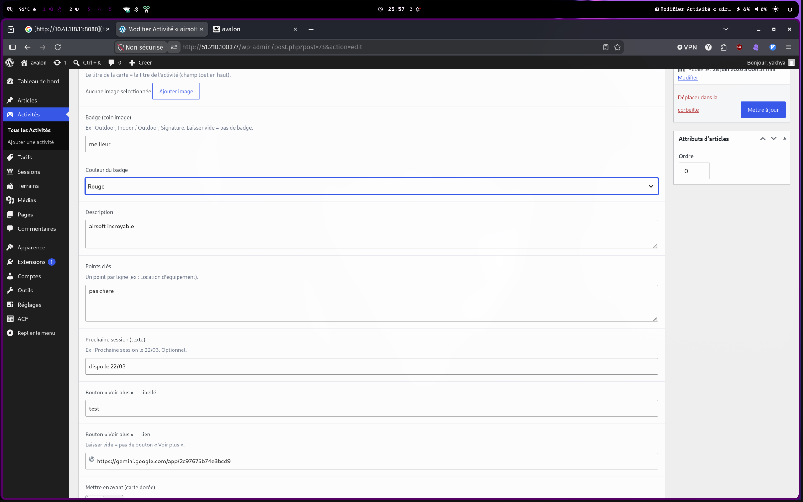
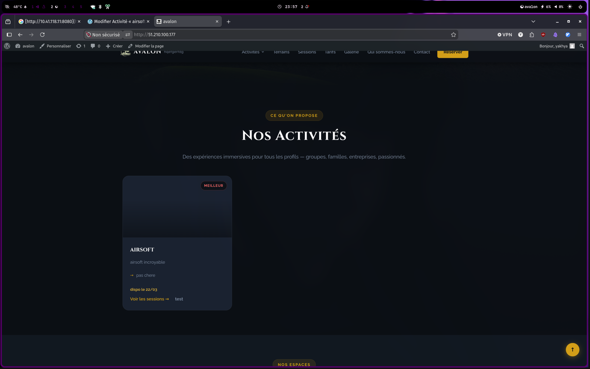
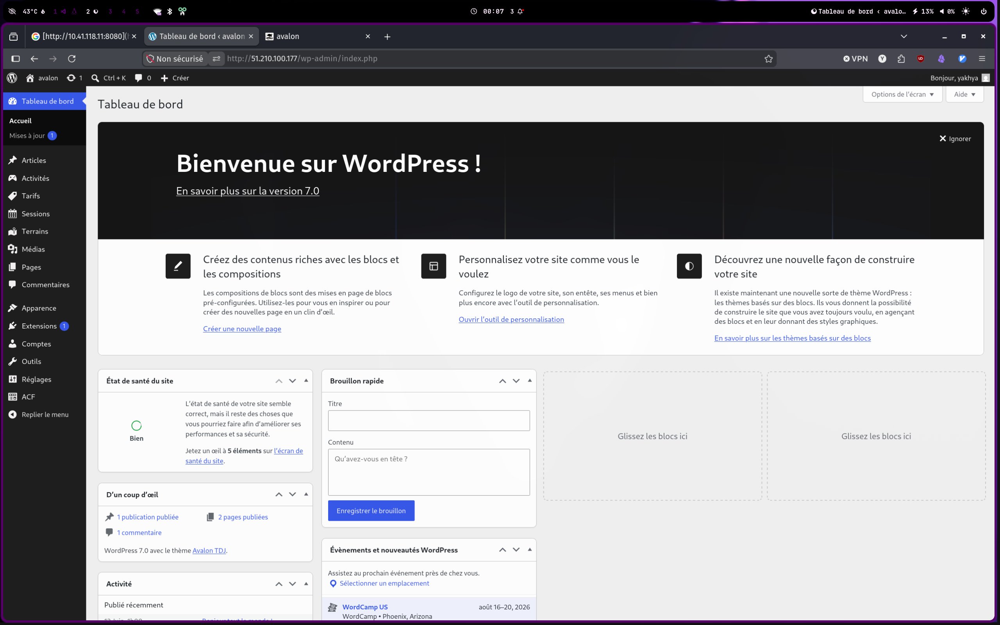
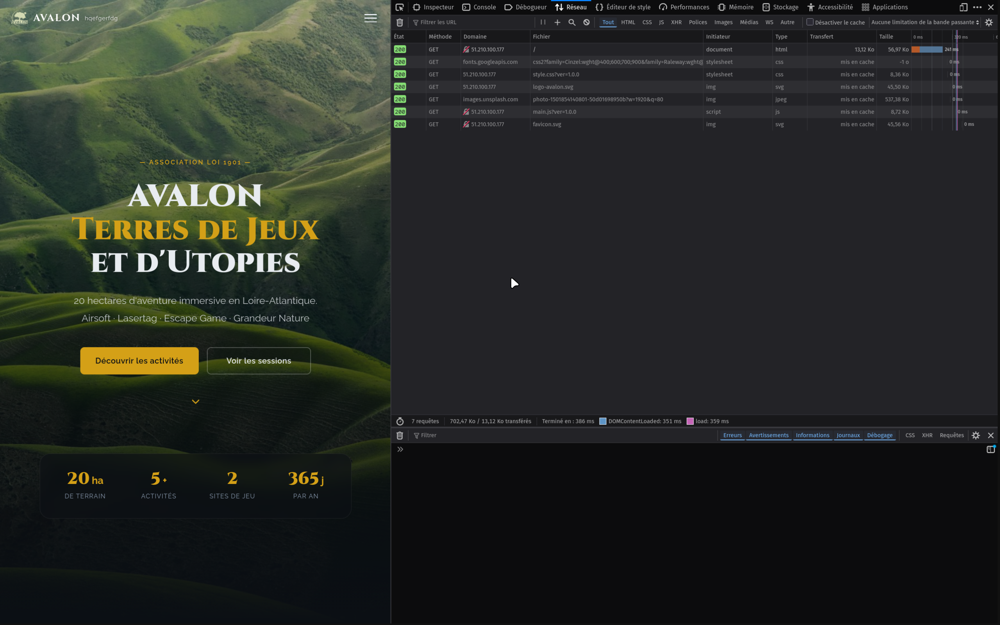

01
Analyse de l'existant et cadrage du projet
Tour de l'ancien site Wix (pages, textes, images), puis cahier des charges avec le client : périmètre, objectifs, planning, et choix de migrer vers WordPress.
Accueil/Stage
En cinq semaines, j'ai refait de zéro le site d'une association. Voici ce que j'ai construit.
Le contexte
Avalon est une association de jeux grandeur nature fondée en 2012 au Landreau (44). Sur une vingtaine d'hectares, une équipe de cinq personnes organise de l'airsoft, du lasertag, des escape games en extérieur et des événements scénarisés.
Mon interlocuteur était M. Philippe, le responsable.
Refaire le site d'Avalon en quittant Wix pour un WordPress que l'équipe gère seule, sans toucher au code. J'ai recodé le site en HTML, CSS et JS, puis l'ai transformé en thème WordPress sur-mesure. Avec ACF et des types de contenu personnalisés, chaque texte et image reste modifiable depuis l'administration. Déployé avec Docker sur un VPS OVH.
Mes missions
Le projet dans l'ordre, de l'analyse à la mise en ligne.
Tour de l'ancien site Wix (pages, textes, images), puis cahier des charges avec le client : périmètre, objectifs, planning, et choix de migrer vers WordPress.
Maquettes Figma (ordinateur et mobile), validées par M. Philippe avant de coder. Ça évite de développer quelque chose qui ne convient pas.
Site développé en HTML, CSS et JavaScript, responsive, pour qu'il tienne sur mobile comme sur ordinateur.
Conversion du site statique en thème WordPress en PHP, découpé en gabarits réutilisables. Pas de constructeur visuel : tout est codé, léger et sous contrôle.
Avec ACF (gratuit) et des types de contenu sur-mesure (Activités, Tarifs, Sessions, Terrains), l'équipe modifie textes et images depuis l'administration, sans toucher au code. Des gabarits gardent une mise en page cohérente.
Fiche de recette : le client teste, remonte ses retours, je corrige jusqu'à validation.
L'équipe remplit un formulaire dans l'administration, et la carte d'activité se met à jour toute seule sur le site — sans toucher au code.



Difficultés rencontrées
Quatre situations qui m'ont demandé de prendre du recul et d'adapter ma méthode.
Voici la version courte. Ouvrez le détail si vous voulez le déroulé complet de chaque situation.
Le design livré n'était que des images, impossible à adapter sur mobile. J'ai refait la mise en page en HTML/CSS pour qu'elle tienne sur tous les écrans.
Le design fourni était fait uniquement d'images. Impossible à adapter : sur téléphone, tout débordait, car une image ne se réorganise pas comme du HTML.
J'ai proposé de refaire la mise en page en HTML/CSS. La responsivité comptait plus pour eux que de coller au pixel près à la maquette.
Une maquette doit être réalisable et utilisable sur tous les écrans, pas seulement jolie.
L'équipe voulait pouvoir gérer son site elle-même, comme elle le faisait sur Wix. Elementor s'est vite révélé trop lourd, alors je suis parti sur ACF : je code les gabarits, et l'équipe n'a plus qu'à remplir des formulaires. Sur cette partie, un étudiant de BTS SIO SLAM m'a donné un coup de main.
L'équipe voulait modifier le site elle-même, comme sur Wix, en déplaçant les éléments comme des briques. On a d'abord tenté Elementor, mais c'est lourd et exige de bien le maîtriser.
Passage à ACF : je code le site, l'équipe modifie le contenu via des formulaires simples, avec des gabarits prédéfinis. J'ai été épaulé par un étudiant en fin de 2ᵉ année de BTS SIO SLAM.
L'outil le plus impressionnant n'est pas toujours le bon. ACF, plus léger, répondait mieux au besoin.
Le thème WordPress sur-mesure dépassait largement mon niveau de début de stage. Je me suis appuyé sur l'IA (Claude) pour comprendre et progresser au fil du projet, sans m'en servir comme d'un raccourci.
L'intégration en thème WordPress sur-mesure (PHP, ACF, types de contenu personnalisés) dépassait ce que je savais faire en début de stage. Je n'avais jamais travaillé sur ce type de projet et je ne maîtrisais pas encore assez le code.
Je me suis appuyé sur l'IA (notamment Claude) pour comprendre, débloquer et apprendre au fil du projet : je faisais générer des pistes, je les lisais, je les adaptais à notre cas, puis je les testais jusqu'à comprendre comment ça fonctionnait.
Savoir s'appuyer sur les bons outils pour monter en compétence vite fait partie du métier. L'IA m'a servi de tuteur pour apprendre, pas de raccourci pour éviter de comprendre.
Ma vraie difficulté, c'était la communication : j'allais trop vite. Mon responsable m'a appris à ralentir et à reformuler pour qu'un client n'ait jamais à deviner.
Ma plus grosse difficulté était la communication : j'allais trop vite pour expliquer ce que j'avais en tête.
Mon responsable m'a aidé : « un client ne doit jamais avoir à deviner ce que tu lui dis ». J'ai appris à ralentir et à reformuler.
Savoir coder ne suffit pas, il faut se faire comprendre. C'est ce sur quoi j'ai le plus progressé.
Stack technique
Un choix volontairement sobre, pensé pour que l'association garde la main sur son site après mon départ.
Objectifs mesurables
Des objectifs vérifiables, qui m'ont servi d'indicateurs de suivi pendant la recette.
